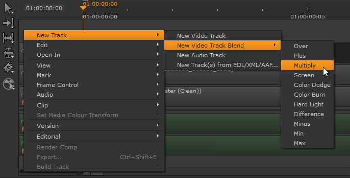
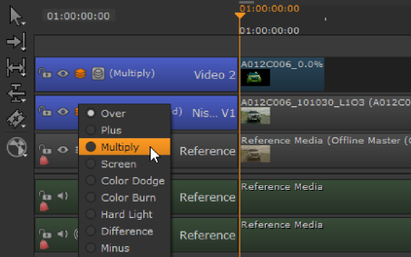
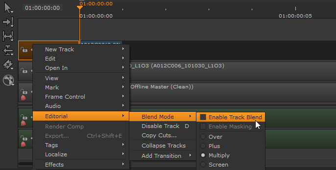
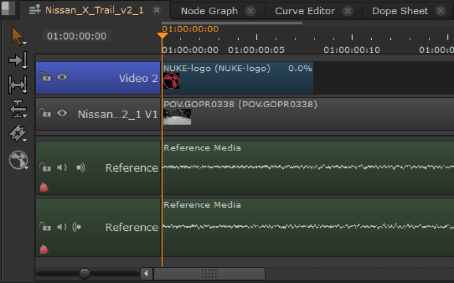
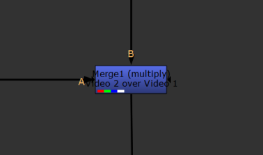
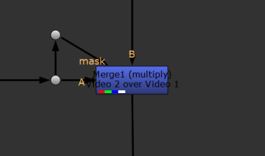

Nuke Studio allows you to perform merges between tracks in the timeline, for example overlaying a logo on a clip instance without heading into
SeeMerge Operations for a full description of the available blend modes.
NOTE: The Viewer currently treats all alpha channels as premultiplied, which can result in the Viewer background being “added” to the image.
You can add soft effects to blended tracks as normal (see Soft Effects for more information) and blended tracks are included along with the clip instance in Export operations. See Exporting from Nuke Studio and
| 1. | Right-click in the timeline, select New Track > New Video Track Blend, and then choose the blend mode to apply. |

A new track is added at the top of the track stack, colored blue to indicate that it's going to be blended over the track below.
| 2. | Add the required clip instance to the blend track as you would any other clip instance. See Adding Clips to the Timeline for more information. |
| 3. | Click and hold the Blend icon to select the blend mode. |

| 4. | Click the Blend icon to toggle blending on and off. |
| 1. | Click the Blend icon to toggle blending on, |
OR
Right-click in the header of the target track and select Editorial > Blend Mode > Enable Track Blend.

The selected track is converted into a blend track, colored blue to indicate that it's going to be blended over the track below.
| 2. | You can add clip instances to the blend track as you would any other clip instance. See Adding Clips to the Timeline for more information. |

The Viewer displays the higher track blended with the track below.
| 3. | Click and hold the Blend icon to select the blend mode. |
Masking limits the effect of the blend track to just those areas covered by the alpha channel in the blend image. For example, using the Multiply blend mode with masking disabled multiplies the background plate in non-alpha areas, which may not be the result you require.
|
|
|
|
Background track B. |
Blend track A. |
|
|
|
|
A multiplied by B with Masking |
A multiplied by B with Masking |
SeeMerge Operations for a full description of the available blend modes.
Click the Mask icon to toggle alpha masking on and off. The mask option also carries over into the Node Graph when you Create Comp for a masked blend operation:
|
 |
 |
|
Comp of A over B using the multiply merge operation with masking disabled. |
The same comp using the multiply merge operation, but with masking enabled. |
|
|